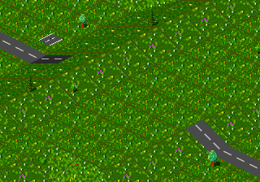

Um einen Tunnel zu bauen, genügt es, auf beiden Seiten des Hügels die Trasse ein wenig den Berg hinauf zu führen und dann ein Trassenende mit dem entsprechenden Tunnelbauwerkzeug (Schienentunnel oder Straßentunnel) anzuklicken. Die beiden Illustrationen verdeutlichen das Vorgehen noch einmal:
|  |
|